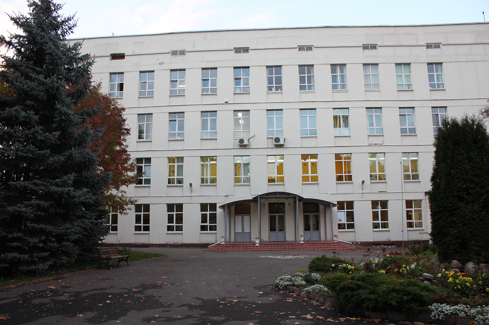

Специализированный учебно-научный центр (факультет) — школа-интернат имени А.Н. Колмогорова Московского государственного университета имени М.В.Ломоносова (СУНЦ МГУ) образован в 1988 году на базе физико-математической школы № 18 при МГУ, созданной в 1963 году выдающимися учеными, академиками А.Н. Колмогоровым, И.К. Кикоиным и И.Г. Петровским с целью отбора и обучения старшеклассников, проявивших склонности к изучению математики и естественных наук. Опираясь на идеи основателей, СУНЦ МГУ принимает школьников не только из крупных городов, но и из глубинных регионов России.
Занятия в школе проходят в форме лекций, семинаров, спецкурсов и лабораторно-практических работ, которые проводят профессора и преподаватели естественных и гуманитарных факультетов МГУ, в том числе 12 докторов и 65 кандидатов наук.
